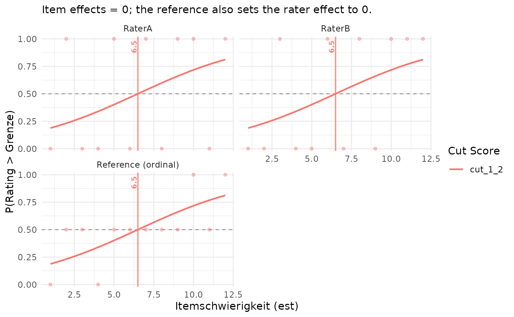

Compute IDM Cuts from a Cumulative Ordinal Model
computeCutsIDMOrdinal.RdEstimates all performance-level boundaries jointly with a cumulative-logit
model. By default, crossed random intercepts account for systematic
differences between raters and between items. The main cuts describe a
reference rater and item whose random intercepts are zero. Input columns
follow the conventions of computeCutsIDMMAPT.
Usage
computeCutsIDMOrdinal(
dat,
boundaries = c(1.5, 2.5, 3.5, 4.5),
est_col = "est",
item_id_col = NULL,
rater_cols = NULL,
rater_pattern = "Rater",
rater_id_col = NULL,
rating_col = NULL,
input_format = c("auto", "long", "wide"),
rating_levels = NULL,
missing = c("drop", "error"),
cut_labels = NULL,
per_rater = TRUE,
random_effects = c("rater", "item"),
control = list()
)Arguments
- dat
A data frame containing item difficulties and ordered ratings. Each item–rater pair must occur at most once, and an item must have the same difficulty wherever it occurs.
- boundaries
Strictly increasing half-integers selecting adjacent rating levels, for example
c(1.5, 2.5)for three levels. These are indices on the rating scale, not item difficulties. When omitted together with explicitrating_levels, all adjacent boundaries are returned. With the category definition held fixed, selecting fewer boundaries changes only the returned cuts. Seerating_levelsfor how boundaries also enter the category definition when labels are not supplied.- est_col
Name of the finite, nonmissing numeric item-difficulty column. The returned cuts use this same scale.
- item_id_col
Name of the item identifier column. Required for long input. With wide input, rows identify items when this argument is omitted.
- rater_cols
Names of the rating columns in wide input. If
NULL, they are selected byrater_pattern.- rater_pattern
Regular expression identifying wide rating columns.
- rater_id_col
Name of the rater identifier column in long input.
- rating_col
Name of the rating column in long input.
- input_format
"long"requires item, rater, and rating columns."wide"uses one row per item and one column per rater."auto"infers the layout from the supplied column arguments.- rating_levels
Optional unique rating labels ordered from lowest to highest performance level, for example
c("1a", "1b", "2", "3")orc("basic", "proficient", "advanced"). Their positions become indices1, ..., K. Without this argument, ratings must be positive integer level codes, and the declared levels are1, ..., K, whereKis the largest observed code orceiling(boundaries), whichever is greater. The default boundaries therefore declare at least five levels. Supplyrating_levelsto fix the category definition independently of the requested output boundaries.- missing
"drop"removes missing ratings while keeping other available ratings of the same item or rater."error"rejects missing ratings. Missing identifiers and difficulties are always rejected.- cut_labels
Optional unique, nonempty names for the requested cuts. Defaults to names such as
cut12, orcut_basic_proficientwith explicit category labels. The name"person"is reserved.- per_rater
Also return conditional rater cuts? Defaults to
TRUE. They use the rater effects estimated in the same joint model; no separate rater models are fitted. This argument does not change the reference cuts or the estimated model.- random_effects
Character vector selecting random intercepts:
c("rater", "item")(default),"rater","item", orcharacter()for a model without random effects. Selected grouping factors must have enough observed groups and replication to fit their effects. The function does not silently remove a requested effect.- control
Named list of supported optimization controls. Both model types accept
trace,maxIter,gradTol, andmaxLineIter. Mixed models additionally acceptinnerCtrl,useMatrix,checkRanef, and thenlminbcontrolsiter.max,eval.max,rel.tol,abs.tol,x.tol,xf.tol,step.min,step.max,sing.tol, anddiff.g. Models without random effects also acceptrelTol,tol,maxModIter, andconvergence. Seeclmm.control,clm.control, andnlminb. The optimizer is fixed tonlminbfor mixed models and Newton for models without random effects; unsupported controls cause an error. Mixed-model defaults includeuseMatrix = TRUE,maxIter = 100,innerCtrl = "giveError",iter.max = 200,eval.max = 400, andrel.tol = 1e-10.
Details
Methodological basis and scope
This function applies an established ordinal modelling framework to IDM
ratings. Christensen's (2026) cumulative-link mixed-model tutorial gives the
cumulative-logit model with normally distributed judge effects, and the
ordinal documentation supports crossed random effects. Taylor et al.
(2023), especially their Simulation 2, motivate modelling ordinal item
ratings with both participant and item effects. Their application concerns
rating norms and uses a probit link; this function uses a logit link. Their
study does not address IDM standard setting.
For IDM itself, Ferrara et al. (2008, p. 12) describe logistic regression as one way of locating cuts in transition regions. Sireci et al. (2006, pp. 54–55) derive MAPT cuts from separate binary regressions at probability 0.5. The present function combines the ordinal mixed-model framework with this probability-crossing definition, estimating all boundaries jointly. The cited works support these ingredients; they do not establish this particular combination as a validated or superior IDM cut-score method. The formulas below specify the package's extension explicitly.
1. Ordered ratings and the difficulty scale
Let \(i\) index items, \(r\) raters, and
\(R_{ir}\in\{1,\ldots,K\}\) the ordered rating assigned to an item.
The response is a rating category, not whether a student answers correctly.
With rating_levels = c("basic", "proficient", "advanced"), the
indices are 1, 2, and 3. A requested boundary \(b_k=k+0.5\) separates
categories at or below \(k\) from those above \(k\); for example,
boundaries = 1.5 separates basic from the higher categories.
These boundary indices differ from both fitted model thresholds and cuts
on the item-difficulty scale.
Write \(\mathcal O\) for the set of retained item–rater pairs and \(N=|\mathcal O|\) for the number of observed ratings. Each item has one supplied difficulty \(x_i\). For numerical stability, the function uses standardized difficulties $$ \mu=\frac{1}{N}\sum_{(i,r)\in\mathcal O}x_i,\qquad s=\sqrt{\frac{1}{N-1}\sum_{(i,r)\in\mathcal O}(x_i-\mu)^2},\qquad z_i=\frac{x_i-\mu}{s}. $$ An item's difficulty enters these summaries once per observed rating. Thus items with more ratings contribute more entries when the design is unbalanced. Returned cuts are transformed back to the original scale.
2. Cumulative probabilities and proportional odds
Define the logistic distribution function \(\Lambda(t)=1/(1+\exp(-t))\) and the linear predictor \(\eta_{ir}=\beta z_i+u_r+v_i\). The model is $$ \Pr(R_{ir}\leq k\mid x_i,u_r,v_i)=\Lambda(\alpha_k-\eta_{ir}), \qquad k=1,\ldots,K-1. $$ Equivalently, since \(\operatorname{logit}(p)=\log(p/(1-p))\), $$ \operatorname{logit}\Pr(R_{ir}\leq k\mid x_i,u_r,v_i) =\alpha_k-\beta z_i-u_r-v_i. $$ Here \(\alpha_1<\cdots<\alpha_{K-1}\) are freely estimated thresholds on the latent logit scale, \(\beta\) is the common difficulty slope, and \(u_r\) and \(v_i\) are rater and item random intercepts. There is no separate fixed intercept: its location is absorbed into the thresholds. Their spacings are not constrained to be equal.
The upper-category probability used for the cuts is $$ p_k(x_i,u_r,v_i)=\Pr(R_{ir}>k\mid x_i,u_r,v_i) =\Lambda(\beta z_i+u_r+v_i-\alpha_k). $$ The same \(\beta\) applies to every boundary. Holding the random effects fixed, an increase of \(\Delta x\) in difficulty multiplies the odds of a rating above any boundary by \(\exp(\beta\Delta x/s)\). This is the proportional-odds assumption. A positive slope makes these probabilities increase with difficulty.
3. Category probabilities, random effects, and estimation
The model uses the full ordered response in one likelihood. Define \(\alpha_0=-\infty\) and \(\alpha_K=+\infty\). The probability of a particular category \(j\) is the difference between two cumulative probabilities: $$ \pi_{irj}=\Pr(R_{ir}=j\mid x_i,u_r,v_i) =\Lambda(\alpha_j-\eta_{ir})-\Lambda(\alpha_{j-1}-\eta_{ir}), \qquad j=1,\ldots,K. $$ These probabilities are nonnegative and sum to one. For a fixed category definition, changing which boundaries are requested for output does not change the categories used in the fit or create separate regressions.
The random intercepts satisfy $$ u_r\sim N(0,\sigma_u^2),\qquad v_i\sim N(0,\sigma_v^2). $$ They are mutually independent and independent of the supplied difficulty predictor. Ratings are assumed conditionally independent given these effects. Sharing a rater or an item nevertheless induces dependence after the effects are integrated out. The effects are crossed when raters assess multiple items and items are assessed by multiple raters.
Let \(\phi_{\sigma}\) denote a mean-zero normal density with standard
deviation \(\sigma\). For positive variance components, the marginal
likelihood is
$$
L(\boldsymbol{\alpha},\beta,\sigma_u,\sigma_v)
=\int\!\int
\left[\prod_{(i,r)\in\mathcal O}\pi_{ir,R_{ir}}\right]
\left[\prod_r\phi_{\sigma_u}(u_r)\right]
\left[\prod_i\phi_{\sigma_v}(v_i)\right]
\,d\boldsymbol{u}\,d\boldsymbol{v}.
$$
The integration is over all observed rater and item effects, not separately
over each rating. The thresholds, common slope, and variance components
are estimated jointly by approximate maximum likelihood using
clmm with link = "logit", flexible
thresholds, and the Laplace approximation (nAGQ = 1). Omitted
effects are fixed to zero and their integrals disappear. A zero variance
component is interpreted as a degenerate distribution at zero. With no
random effects, clm maximizes the ordinary ordinal
likelihood.
The returned random-effect estimates are conditional modes given the
fitted model parameters. For positive fitted variances they maximize,
up to constants,
$$
\sum_{(i,r)\in\mathcal O}\log\pi_{ir,R_{ir}}
-\frac{1}{2\widehat\sigma_u^2}\sum_r u_r^2
-\frac{1}{2\widehat\sigma_v^2}\sum_i v_i^2.
$$
The normal-distribution terms shrink the effects towards zero. A positive
rater effect means a tendency to assign higher levels at the same
difficulty; a positive item effect means higher ratings for that item than
its supplied difficulty alone predicts. Item effects describe residual
variation in ratings, not measurement error or recalibration of
est. Ratings are not smoothed or automatically trimmed.
4. Deriving reference cuts at probability 0.5
Use hats to denote estimated model parameters. The reference probability
curve fixes both random intercepts to zero:
$$
\widehat p_k(x,0,0)
=\Lambda\left(\widehat\beta\frac{x-\mu}{s}-\widehat\alpha_k\right).
$$
A reference cut \(\widehat c_k\) satisfies
\(\widehat p_k(\widehat c_k,0,0)=0.5\). Because
\(\operatorname{logit}(0.5)=0\),
$$
\widehat\beta\frac{\widehat c_k-\mu}{s}-\widehat\alpha_k=0
\quad\Longrightarrow\quad
\widehat c_k=\mu+s\frac{\widehat\alpha_k}{\widehat\beta}.
$$
These values appear in cuts_summary. They are difficulties, whereas
\(\widehat\alpha_k\) is a threshold on the model's latent scale.
The 0.5 criterion concerns a rating-level assignment; it is neither
a student's probability of answering correctly nor the proportion of the
student population above a cut. It also does not by itself establish a
classification rule with optimal educational consequences.
With \(s>0\), \(\widehat\beta>0\), and ordered thresholds, $$ \widehat c_{k+1}-\widehat c_k =\frac{s}{\widehat\beta}(\widehat\alpha_{k+1}-\widehat\alpha_k)>0. $$ Thus the joint model supplies ordered cuts without sorting the estimated values after fitting.
5. Conditional rater cuts and the plotted curves
For rater \(r\), retain the estimated conditional mode
\(\widehat u_r\) and set the item effect to zero. Solving
\(\widehat p_k(x,\widehat u_r,0)=0.5\) gives
$$
\widehat c_{rk}
=\mu+s\frac{\widehat\alpha_k-\widehat u_r}{\widehat\beta}
=\widehat c_k-\frac{s\widehat u_r}{\widehat\beta}.
$$
These are cuts_per_person. A positive rater effect shifts all of
that rater's cuts down by the same amount; random slopes or rater-specific
threshold spacings are not fitted. The estimates come from one shared
model, not independent rater fits. With no rater effect, observed raters
share the reference cuts. Raters without retained ratings have no
individual cut.
For \(u^*=0\) in the reference panel, or
\(u^*=\widehat u_r\) in a rater panel, the displayed curve can also
be written on the original difficulty scale as
$$
\widehat p_k(x,u^*,0)=\Lambda(A_k+B x),\qquad
A_k=u^*-\widehat\alpha_k-\widehat\beta\mu/s,\qquad
B=\widehat\beta/s.
$$
The diagnostic columns intercept and slope contain
\(A_k\) and \(B\); equivalently the curve is
\(\Lambda(B(x-\widehat c))\). Item effects are estimated and returned,
but held at zero in all reported cuts and plotted curves.
The reference cuts are not obtained by averaging the fitted rater cuts. Nor is the reference probability curve a marginal curve averaged over raters and items. Under the assumed symmetric, mean-zero random-effect distributions, the model-population marginal curve does share its 0.5 crossing with the reference curve: at that point the logistic argument is \(u+v\), and \(\Lambda(t)+\Lambda(-t)=1\). Their shapes still differ when the random-effect variance is positive. This identity does not require an empirical, possibly unbalanced average of the observed raters and items to have the same crossing.
6. Worked numerical example
Suppose difficulties were standardized with \(\mu=500\), \(s=100\), and the fitted four-category model has \(\widehat\beta=2\) and \((\widehat\alpha_1,\widehat\alpha_2,\widehat\alpha_3)=(-1,0,1)\). For boundaries 1.5, 2.5, and 3.5, the reference cuts are $$ 500+100\frac{(-1,0,1)}{2}=(450,500,550). $$ For a rater with \(\widehat u_r=0.4\), the cuts shift by \(-100\times0.4/2=-20\), giving \((430,480,530)\). For the middle boundary, the rater's upper-category logit at difficulty 480 is \(2(480-500)/100+0.4-0=0\), so its probability is exactly 0.5. The corresponding reference probability is 0.5 at difficulty 500. These numbers illustrate the calculation; they are not empirical results.
Fit diagnostics and unavailable cuts
Inspect model_diagnostics and cut_diagnostics before using
the cuts. The common difficulty slope must be positive and numerically
nonzero. A failed, nonconverged, or otherwise unusable model yields
NA cuts and an explanatory diagnostic status, with the original
rating data retained. Invalid input instead produces an error.
Every declared category must occur in the retained ratings. With at least
two observed categories, an unobserved declared category gives
missing_categories diagnostics and unavailable cuts;
the function does not silently join categories and relabel the remaining
thresholds. For a fixed category definition, requesting only a subset of
boundaries does not remove this requirement because the same joint ordinal
model is still fitted.
The statuses are:
okA usable fit and positive common slope supply cuts.
one_classFewer than two categories occur in the retained ratings.
missing_categoriesSome declared categories are unobserved.
constant_estAll retained item difficulties are identical.
separationThe difficulty ranges of successive categories are completely ordered without overlap, allowing an infinite increasing slope.
nonpositive_slopeThe common slope is nonpositive or numerically flat.
non_convergenceThe optimizer or subsequent gradient checks do not establish convergence.
ill_conditionedHessian checks do not establish adequate curvature for the estimated parameters.
unordered_thresholdsEstimated thresholds are not strictly ordered.
fit_error,non_finiteEstimation failed or returned unusable numerical values; inspect the stored warning.
no_dataAn individual rater has no retained ratings.
The numerical diagnostics include convergence information, raw and
Hessian-scaled maximum absolute gradients, Hessian information, and a flag
for random-effect standard deviations below \(10^{-4}\). A near-zero variance may indicate that the data
support little residual variation for that grouping factor; it does not
by itself invalidate otherwise usable cuts. A usable model does not
establish that the proportional-odds or random-effect assumptions hold.
When a variance lies at its zero boundary and the stored Hessian is
ill-conditioned, the function checks the Hessian and gradient after
removing only the variance dimensions whose standard deviations are
below \(10^{-4}\). Fixed parameters and other variance dimensions remain
in this check. The original stored-Hessian diagnostic remains available;
ordinal may itself have already removed boundary dimensions.
Cuts outside the observed difficulty range are retained and marked
extrapolated = TRUE. Reference cuts use the overall observed
range; individual diagnostics use the corresponding rater's observed
range. With a usable positive slope and ordered thresholds, the requested
cuts are ordered. The function does not rearrange estimates to hide a
failed fit.
Plotting and interpretation
plotCutsIDM(result, show_aggregate = TRUE) shows conditional rater
curves and the Reference (ordinal) panel. Curves show
\(\Pr(R>k\mid x)\) with the item effect fixed to zero; the reference
panel also sets the rater effect to zero. With per_rater = FALSE,
only the reference panel is shown. Plotting uses the stored fit results
and does not estimate new models.
Raw points show observed proportions above each boundary. Optional residuals are the differences between these proportions and the displayed curves. Because the displayed curves set item effects to zero, these are reference-curve discrepancies rather than residuals from the fully conditional model.
plotPopulationCutsIDM accepts the result directly. Its
legacy cut_selection = "mean" option selects reference cuts;
"both" adds the conditional rater cuts. plotWrightMap
also accepts the result through cuts, using cuts_summary.
Plausible values and item difficulties must already share the same metric.
Limits of the calculation
This model respects the order of rating categories without treating their numerical codes as equally spaced. Its shared slope is more restrictive than fitting a separate binary regression at each boundary. Assess the proportional-odds assumption, the pattern of rater and item effects, and sensitivity to influential observations before adopting cuts.
No cut-score confidence intervals are computed. Standard errors in the stored model concern the fitted model and treat the input difficulties as known. They do not propagate item-calibration uncertainty, dependence created by panel discussion, or other sources of uncertainty outside this model. A small variance component or a precise model fit is not evidence that the performance-level descriptors are substantively valid.
Value
A list of class cutsIDMOrdinal, including:
- cuts_summary
One-row tibble of reference cuts, with columns named by
cut_labels, on the original item-difficulty scale.- cuts_per_person
Conditional rater cuts, with a
personcolumn followed by the cut columns;NULLwhenper_rater = FALSE.- cut_diagnostics, diagnostics_per_person
Diagnostic tables for the reference and conditional rater cuts. They identify each boundary and cut, its status, warnings, and whether it lies outside the observed range.
n,n_lower, andn_uppercount retained ratings, not unique items.thresholdis the selected model threshold on the standardized latent scale.interceptandslopedescribe the displayed upper-category logit on the original difficulty scale: \(\operatorname{logit}\Pr(R>k)=\text{intercept}+\text{slope}\,x\). The reference hasrater_effect = 0; individual rows retain their conditional rater effect.min_estandmax_estgive the observed range used to flag extrapolation. Individual diagnostics areNULLwhenper_rater = FALSE.- model
The fitted
clmmorclmobject when available. Its predictordifficultyuses the internal standardized scale.model$est_centerandmodel$est_scaleretain the transformation parameters. The model may remain available even when its diagnostics make the resulting cuts unusable.- model_diagnostics
One-row tibble with
status,converged,max_gradient,max_scaled_gradient,hessian_positive_definite,condition_number,singular, andwarning, as well asest_center,est_scale, and countsn_ratings,n_items, andn_raters. Unavailable diagnostic quantities areNA.- rater_effects, item_effects
Estimated conditional random intercepts in
effect, with identifierspersonoritem_idand retained-rating countsn. Effects are on the latent logit scale, not on the item-difficulty scale. Excluded effect terms have zero effects for observed groups. Groups with no retained ratings haveNAeffects.- variance_components
Grouping factor, variance, standard deviation, and number of observed groups for the requested random intercepts.
- data_used
Retained long-format rating data with
item_id,person,est,stage_label, andstage_raw.- n_dropped
Number of missing ratings removed.
- boundaries, rating_levels, cut_labels
Requested boundaries, ordered category labels, and output column names.
- cuts_ordered
Whether all reference cuts are strictly increasing;
NAif any is unavailable.- random_effects, control, method
Requested random-effect terms, supplied optimizer controls, and a description of the fitted method.
- input_format, est_col, item_id_col, rater_id_col, rating_col, missing
Input layout and column/missing-value settings.
References
Christensen, R. H. B. (2026).
A Tutorial on fitting Cumulative Link Mixed Models with clmm2 from
the ordinal Package. Package vignette, version dated July 26, 2026.
See Equation (1) and pp. 1–2 for the cumulative-logit model with normal
judge effects and Laplace estimation, and pp. 5–6 for conditional modes
and reference predictions.
https://stat.ethz.ch/CRAN/web/packages/ordinal/vignettes/clmm2_tutorial.pdf.
For crossed random effects in the current clmm implementation, see
ordinal: Regression Models for Ordinal Data,
doi:10.32614/CRAN.package.ordinal
, and
https://cran.r-project.org/web/packages/ordinal/refman/ordinal.html#clmm.
Taylor, J. E., Rousselet, G. A., Scheepers, C., and Sereno, S. C. (2023). Rating norms should be calculated from cumulative link mixed effects models. Behavior Research Methods, 55, 2175–2196. doi:10.3758/s13428-022-01814-7 . See “Simulation 2: CLMMs with item and participant random effects” for ordinal ratings with both item and participant effects.
Ferrara, S., Perie, M., and Johnson, E. (2008). Matching the judgmental task with standard setting panelist expertise: The Item-Descriptor (ID) Matching Method. Journal of Applied Testing Technology, 9(1). See p. 12 for logistic regression as an IDM cut-location method. https://www.testpublishers.org/assets/documents/Issue%201%202008.pdf.
Sireci, S. G., Baldwin, P., Martone, A., Zenisky Laguilles, A., Hambleton, R. K., and Han, K. T. (2006). Massachusetts Adult Proficiency Tests Technical Manual. Center for Educational Assessment Research Report No. 600, University of Massachusetts Amherst. See pp. 54–55 for separate binary logistic regressions and the probability-0.5 cut definition used in MAPT standard setting. https://bpb-us-e2.wpmucdn.com/websites.umass.edu/dist/5/40195/files/2021/03/MAPT_TechnicalManualv1.pdf.
Examples
## Simulated ratings with rater and item variation.
set.seed(4721)
n_items <- 60L
n_raters <- 10L
ratings <- expand.grid(item = seq_len(n_items), rater = seq_len(n_raters))
ratings$est <- seq(-3.5, 3.5, length.out = n_items)[ratings$item]
rater_shift <- rnorm(n_raters, sd = 0.7)
item_shift <- rnorm(n_items, sd = 0.65)
latent <- 1.1 * ratings$est + rater_shift[ratings$rater] +
item_shift[ratings$item] + rlogis(nrow(ratings))
ratings$rating <- findInterval(latent, c(-1.5, -0.5, 0.5, 1.5)) + 1L
mixed_cuts <- computeCutsIDMOrdinal(
ratings, item_id_col = "item", rater_id_col = "rater",
rating_col = "rating", rating_levels = 1:5
)
mixed_cuts$cuts_summary
#> # A tibble: 1 × 4
#> cut_1_2 cut_2_3 cut_3_4 cut_4_5
#> <dbl> <dbl> <dbl> <dbl>
#> 1 -1.35 -0.418 0.487 1.55
mixed_cuts$variance_components
#> # A tibble: 2 × 4
#> group variance sd n_levels
#> <chr> <dbl> <dbl> <int>
#> 1 rater 0.844 0.919 10
#> 2 item 0.748 0.865 60
head(mixed_cuts$rater_effects)
#> # A tibble: 6 × 3
#> person effect n
#> <chr> <dbl> <int>
#> 1 1 0.564 60
#> 2 10 0.0523 60
#> 3 2 0.204 60
#> 4 3 -0.924 60
#> 5 4 -1.21 60
#> 6 5 -0.204 60
summary(mixed_cuts, per_rater = TRUE)
#> Joint ordinal IDM cuts (cumulative logit)
#> 600 ratings from 10 raters on 60 items; 0 missing ratings dropped.
#> Random intercepts: rater, item
#>
#> Reference cuts (rater and item effects set to zero):
#> cut_name cut status extrapolated
#> cut_1_2 -1.351 ok FALSE
#> cut_2_3 -0.418 ok FALSE
#> cut_3_4 0.487 ok FALSE
#> cut_4_5 1.554 ok FALSE
#>
#> Model diagnostics:
#> status converged max_gradient max_scaled_gradient hessian_positive_definite
#> ok TRUE 0.001 0 TRUE
#> singular warning
#> FALSE
#>
#> Random-intercept variance components (logit scale):
#> group variance sd n_levels
#> rater 0.844 0.919 10
#> item 0.748 0.865 60
#>
#> Conditional rater cuts (joint fit, item effect set to zero):
#> person cut_1_2 cut_2_3 cut_3_4 cut_4_5
#> 1 -1.870 -0.936 -0.032 1.035
#> 10 -1.400 -0.466 0.439 1.506
#> 2 -1.539 -0.605 0.299 1.366
#> 3 -0.501 0.433 1.337 2.404
#> 4 -0.235 0.699 1.603 2.670
#> 5 -1.164 -0.230 0.675 1.742
#> 6 -0.197 0.737 1.642 2.708
#> 7 -1.829 -0.895 0.009 1.076
#> 8 -2.096 -1.162 -0.258 0.809
#> 9 -2.686 -1.752 -0.848 0.219
#> Reference cuts are not the mean of rater cuts. No cut confidence intervals are computed.
#> Model, effects and ratings remain in the original result: $model, $rater_effects, $item_effects, $data_used.
## The same data in wide format use the same item and category definitions.
wide_ratings <- tidyr::pivot_wider(
ratings, id_cols = c(item, est), names_from = rater,
values_from = rating, names_prefix = "Rater"
)
wide_cuts <- computeCutsIDMOrdinal(
wide_ratings, item_id_col = "item", rating_levels = 1:5
)
## A small fixed-effects comparison, without random intercepts:
dat <- data.frame(
est = 1:12,
RaterA = c(1, 2, 1, 1, 2, 1, 2, 1, 2, 2, 1, 2),
RaterB = c(1, 1, 2, 1, 1, 2, 1, 2, 1, 2, 2, 2)
)
cuts <- computeCutsIDMOrdinal(dat, rating_levels = c(1, 2),
random_effects = character())
cuts$cuts_summary
#> # A tibble: 1 × 1
#> cut_1_2
#> <dbl>
#> 1 6.5
cuts$cut_diagnostics
#> # A tibble: 1 × 16
#> cut_name boundary cut n n_lower n_upper min_est max_est threshold
#> <chr> <dbl> <dbl> <int> <int> <int> <int> <int> <dbl>
#> 1 cut_1_2 1.5 6.5 24 12 12 1 12 2.22e-16
#> # ℹ 7 more variables: intercept <dbl>, slope <dbl>, rater_effect <dbl>,
#> # converged <lgl>, extrapolated <lgl>, status <chr>, warning <chr>
plotCutsIDM(cuts, show_aggregate = TRUE, cut_value_digits = 2)
